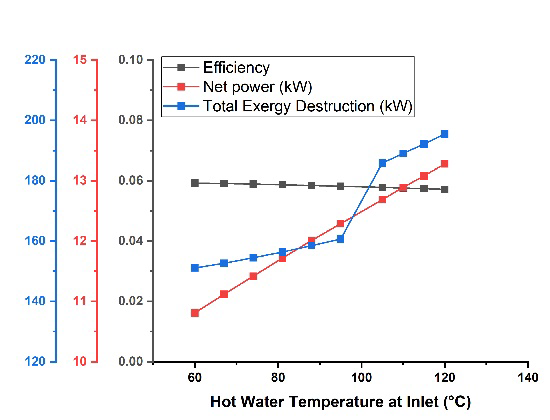

Organic Rankine Cycle for Remote Geothermal Heat Sources
8.28%peak cycle efficiency

Key finding
R600a cut working‑fluid GWP to 3, against 1030 and 600, at nearly equal efficiency, and raising evaporator pressure from 500 to 950 kPa lifted efficiency to 8.28 percent.
- Domain
- Thermodynamics and energy
- Year
- 2025
- Team
- Team of 5
- Tools
- Thermodynamic modelling
- Exergy analysis
- R600a working fluid
- Result
- Cycle efficiency up to 8.28 percent
- Status
- PUBLISHED 2025
- Publication
- Published: Materials Proceedings 2025, 23, 10. Second author. doi.org/10.3390/materproc2025023010
Summary
What
Parametric thermodynamic and exergy analysis of a single‑stage organic Rankine cycle for off‑grid geothermal sites in Pakistan, published in Materials Proceedings.
Key finding
R600a cut working‑fluid GWP to 3, against 1030 and 600, at nearly equal efficiency, and raising evaporator pressure from 500 to 950 kPa lifted efficiency to 8.28 percent.
Results
- Raising the hot water inlet from 60 to 120 °C lifted net power by 23 percent.
- Condenser pressure below 350 kPa gave negative exergy destruction, so 350 kPa is the lower limit.
Problem
Pakistan has untapped geothermal heat in remote, off‑grid areas, while its power supply leans on imported fuel. The paper designs a single‑stage ORC for such sources and studies how geothermal source conditions and ORC operating parameters change net power, cycle efficiency and exergy destruction by component.
Method
- System: pump, evaporator (counterflow heat exchanger, effectiveness 0.8), turbine, and a condenser that rejects heat to the atmosphere.
- Assumptions: steady state, negligible piping heat loss, no pressure losses in the condenser or evaporator, turbine isentropic efficiency 0.85 and pump efficiency 0.8.
- Working fluids compared: R600a, R245fa and R141b. R600a was chosen because it was nearly as efficient and has a GWP of 3, against 1030 for R245fa and 600 for R141b.
- Parameters varied: hot water inlet temperature 60 to 120 °C, hot water mass flow 3 to 7.5 kg/s, hot water pressure 70 to 340 kPa, ORC fluid mass flow 0.2 to 2 kg/s, evaporator pressure 500 to 950 kPa and condenser pressure 350 to 485 kPa.
- Mass and energy balances with exergy analysis. Exergy destruction was found from entropy generation for the pump, evaporator, turbine and condenser.
Equations
- EQ. 1
- EQ. 2
- EQ. 3
- EQ. 4
- EQ. 5
Results
Hot water mass flow and pressure had a negligible effect.
| Input varied | Range | Efficiency | Net power | Total exergy destruction |
|---|---|---|---|---|
| Hot water mass flow and pressure | stayed about 6 percent | about 11.7 kW | about 156 kW | |
| Hot water inlet temperature | 60 to 120 °C | slightly lower | up 23 percent | up 29 percent |
| Evaporator pressure | 500 to 950 kPa | up to a maximum of 0.0828 at 950 kPa | 165 to 147 kW | |
| Condenser pressure | 350 to 485 kPa | down almost 43 percent | down about 50 percent | about constant |
ORC mass flow raised net power and exergy destruction linearly, so a high flow is unsuitable. The evaporator destroyed the most exergy in every case.




Limitations
- Model study only. No experiment and no comparison with measured data or another published model is reported.
- Hot water flow and pressure show no effect partly because evaporator effectiveness is fixed at 0.8.
- Cycle efficiency stays low, at about 6 to 8.28 percent.
- The paper includes no cost or economic analysis and does not name the calculation software.
Tools
- Thermodynamic modelling
- Exergy analysis
- R600a working fluid